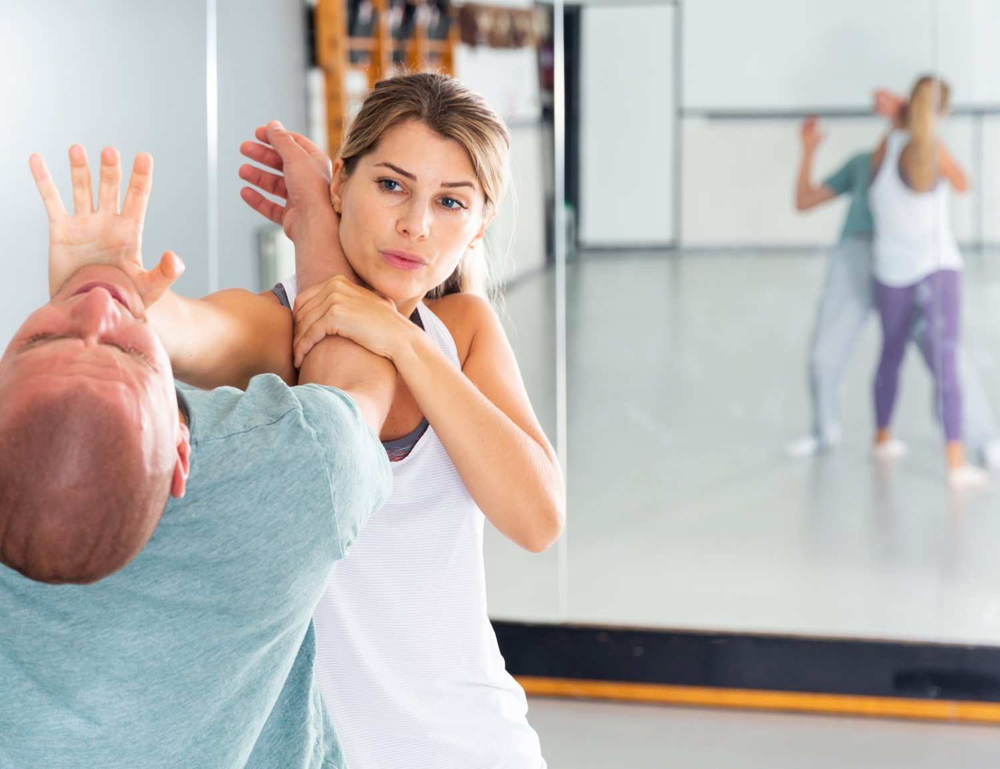

Resources on women’s safety include the National Human Rights Commission (NHRC), which addresses violations of women's rights. The Women Equality Index measures gender parity in various sectors. Self-defense programs empower women to protect themselves. Organizations like NCW (National Commission for Women) advocate for legal and social reforms.
India has made significant strides in women's rights, influenced by its Constitution, various legislations, policies, and international commitments like the United Nations Convention on the Elimination of All Forms of Discrimination against Women (CEDAW). The Indian Constitution guarantees equality and prohibits discrimination based on gender (Articles 14, 15, and 16). Legislations such as the Domestic Violence Act, Sexual Harassment Act, and Maternity Benefit Act further strengthen women's rights.
View More The India Workplace Equality Index (IWEI) is a benchmarking tool assessing LGBT+ inclusion in Indian workplaces. In 2022, 105 organizations participated, with awards for Gold, Silver, and Bronze employers based on their progress. Notable achievements include the introduction of an Employee Feedback Questionnaire and new awards like Ally Trailblazer, LGBT+ Trailblazer, and Employee Resource Group of the Year, recognizing outstanding contributions to LGBT+ workplace inclusion.
The World Economic Forum (WEF) publishes an annual Global Gender Gap Report that measures gender-based disparities across the world. The report focuses on key areas such as economic participation, education, health, and political empowerment, providing an in-depth analysis of gender inequalities. It serves as a valuable resource for understanding global gender equality metrics and tracking progress in these areas, offering insights into how well different countries and regions are addressing gender disparities.
UN Women is a global entity dedicated to promoting gender equality and empowering women worldwide. Their extensive collection of publications, research reports, and policy documents addresses critical issues such as economic empowerment, violence against women, and political participation. By providing data-driven insights and best practices, UN Women helps governments, organizations, and communities develop effective strategies to enhance women's rights and opportunities. Their resources serve as a valuable guide for promoting inclusive policies, ensuring women's participation in decision-making processes.
Catalyst is a nonprofit organization focused on advancing women in business and creating inclusive workplaces. They provide research reports, webinars, and practical tools aimed at addressing gender inequality in corporate environments. Their studies explore leadership representation, pay equity, and the impact of diversity initiatives on organizational performance. By offering insights and best practices, Catalyst empowers organizations to implement effective strategies for attracting, retaining, and promoting women in the workplace. Their commitment to fostering inclusive leadership helps create.
The International Labour Organization (ILO) focuses on promoting gender equality in the workforce by addressing issues such as equal pay, women's leadership, and barriers to employment. The ILO publishes reports and guidelines that provide insights into best practices for employers and policymakers looking to create inclusive workplaces. Their resources emphasize the importance of addressing gender bias, promoting work-life balance, and ensuring women have equal opportunities in all sectors. By advocating for policies that support women's employment and empowerment, the ILO aims to enhance gender equality.
The Organisation for Economic Co-operation and Development (OECD) conducts research on women in the workforce, analyzing factors influencing female labor force participation, wage gaps, and policies supporting women's advancement. Their publications offer insights into the economic benefits of gender equality, demonstrating how empowering women can lead to increased productivity and growth. The OECD also provides data and best practices for countries seeking to improve women's representation.
Lean In is an organization dedicated to empowering women in the workplace through research and community support. Their reports, often developed in collaboration with McKinsey, explore issues like gender bias, women’s leadership, and workplace inequality. They provide actionable insights and strategies for organizations to create more inclusive environments that support women’s career advancement. Their resources empower women to navigate their careers and push for systemic changes ...
The International Finance Corporation's (IFC) SheWorks initiative aims to enhance women's employment in the private sector by providing resources, case studies, and practical strategies for businesses. SheWorks focuses on addressing barriers that prevent women from entering and thriving in the workforce, such as workplace culture, policies, and biases. By sharing successful practices and lessons learned from various industries, the initiative encourages companies to implement gender-inclusive policies and ...
1. Physical Self-Defense Training Focused on Simplicity
2. Situational Awareness and Avoidance Techniques
3. Non-Lethal Self-Defense Tools
 Indian women can enhance their safety by combining physical techniques with situational awareness and non-lethal tools. While long-term martial arts training provides strength and confidence, practical short-term solutions like carrying pepper spray or attending quick defense workshops are more immediately useful.
Each method is designed to help women feel more secure and prepared in any situation, whether they’re commuting, working late, or simply going about daily life.
Self-defense requires a combination of crucial qualities to effectively protect oneself. Awareness is essential to recognize potential threats early and avoid dangerous situations. Confidence in body language can deter attackers by showing self-assurance. Quick reflexes enable swift reactions to sudden threats, while physical strength helps in defending against physical attacks. Mental resilience is vital to remain calm and focused under pressure.
Here are three notable individuals who have spoken or advocated for self-defense and women's